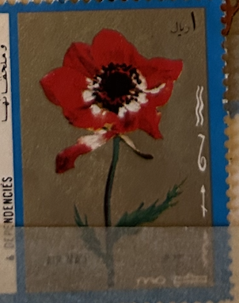
| SOURCE | TITLE| IMAGE MATCH | click to source page |
| Empirephilatelists.com | Iraq 1973 Obligatory Tax 5f on 2f SGT1121 V.F MNH | Empire Philatelists Stamp Dealers | 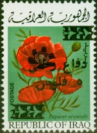 |
| eBay | Cancelled to Order/CTO Kosovan Stamps for sale | eBay | 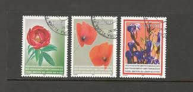 |
| eBay | Flowers Air Mail Iraqi Stamps for sale | eBay | 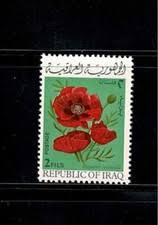 |
| Syrian Arab Republic. International Flower Show, Damascus. Issued 27th May 1975. 5p. camomile; 10p. chincherinchi; 15p. carnations; 20p. poppy; 25p. honeysuckle. | 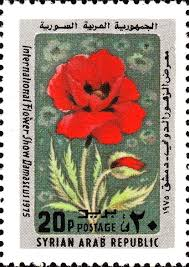 | |
| eBay | Mint Never Hinged/MNH Flowers Afghan Nature & Plants Postal Stamps for sale | eBay | 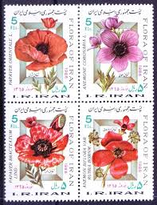 |
| eBay | Flowers Maltese Stamps (1964-Now) for sale | eBay | 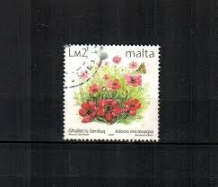 |
| Etsy | Vintage Netherlands Floral Stamp Art Prints: 1953 Dutch Flower Set - Etsy | 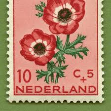 |
| eBay | Single Iraqi Stamps for sale | eBay | 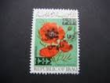 |
| eBay | Hungarian Multi-Color Postal Stamps for sale | eBay | 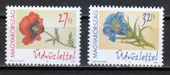 |
| HipStamp | Iran-1986-Lovely Flora of Iran MNH Block-Vf WE Ship to World Wide and Combine | Middle East - Iran, Stamp / HipStamp | 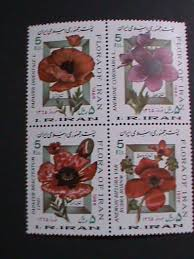 |
| Find Your Stamps Value | Value of poczta polska 2zl stamps | 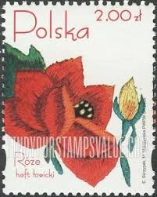 |
| Collector's Shop International | Cyprus 2001 "100 Years since the Birth of the poet Pavlos Liasides" Complete set MNH (**) Vlastos 804 | 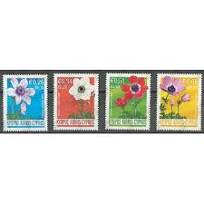 |
| Collector's Shop International | Cyprus Stamps | 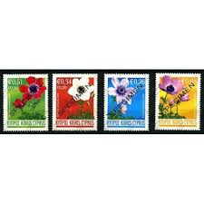 |
| eBay | LOT STAMPS MIDDLE EAST 1986 MNH** (F125993) | eBay | 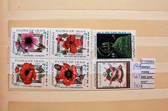 |
| HipStamp | Iran # 2212 MNH Flowers | Middle East - Iran, General Issue Stamp / HipStamp | 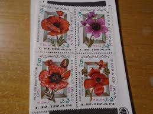 |
| eBay | LIBYA 784 - Flowers "Ranunculus asiaticus" (pb44318) | eBay | 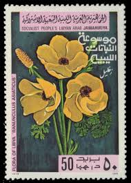 |
| eoptometry.com | Complete Issue Stamps 1974 Monaco Floristen Stamps - Complete Mint Set 1141-1142, Never Hinged & Unmounted Floristen Stamp Collection | 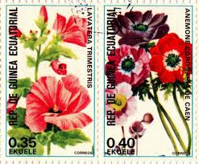 |
| eBay | Netherlands 1953 - B249-53 Semi-postals (Flowers) Set of 5 - MNH | eBay | 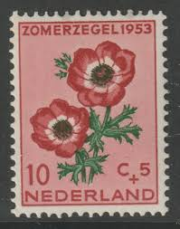 |
| eBay | Flowers Used Lebanese Stamps for sale | eBay | 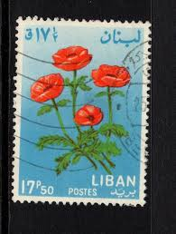 |
| Shutterstock | 1,146 Caulis Flower Royalty-Free Images, Stock Photos & Pictures | Shutterstock | 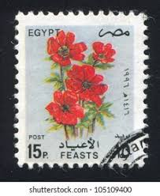 |
| Banknotecoinstamp | Matchbox labels – Page 4 – Banknotecoinstamp | 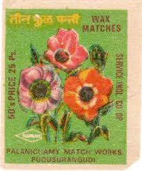 |
| Amazon.com | Amazon.com: Kosovo 28-30 (Complete.Issue.) unmounted Mint/Never hinged ** MNH 2005 Locals Flora (Stamps for Collectors) Plants/Mushrooms : Toys & Games | 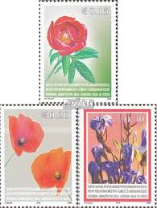 |
| Free stamp catalogue | Stamps from Cyprus - Freestampcatalogue.com - The free online stampcatalogue with over 500.000 stamps listed. | 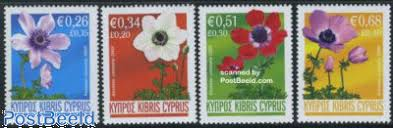 |
| Banknotecoinstamp | collectibles – Page 37 – Banknotecoinstamp | 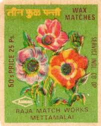 |
| carousell.ph | USA : Air Mail Stamps ( set A ) , 12 v., Hobbies & Toys, Memorabilia & Collectibles, Stamps & Prints on Carousell | 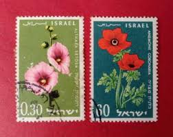 |
| DeqiStamps.com | San Marino year 1971 Flowers MNH stamps set | 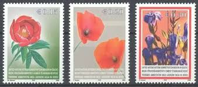 |
| eBay | Flowers Full Sheet African Stamps for sale | eBay | 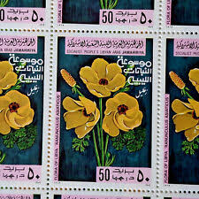 |
| eBay | CYPRUS 2008 ANEMONE FLOWERS SET OF 4V. CORNER with CONTROL NUMBER MNH | 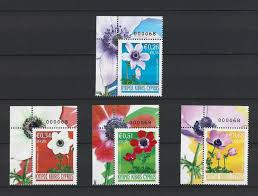 |
| eBay | LOT STAMPS MIDDLE EAST 1986 MNH** (F125989) | eBay | 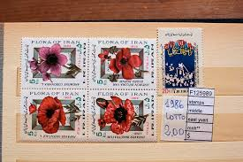 |
| 1998 Jordan - Jordanian flora | 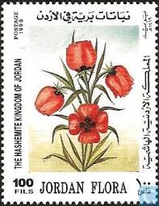 | |
| eBay | LIBYA 1979 FLOWERS SIX STAMPS SET MNH | eBay | 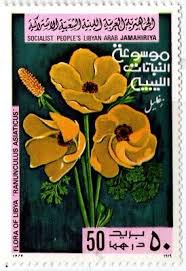 |
| Alamy | Summer pheasant's-eye, Adonis aestivalis, in flower in the french Alps Stock Photo - Alamy | 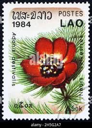 |
| wopa-plus.com | 30th Anniversary of Diplomatic Relations between Kyrgyzstan and Brasil, Indonesia and Czechia | Kyrgyzstan KEP Stamps | Worldwide Stamps, Coins Banknotes and Accessories for Collectors | WOPA+ | 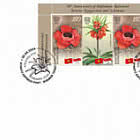 |
| stampsandstuff.net | Stamps from Sharjah | 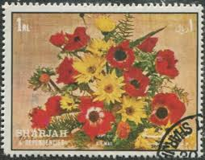 |
| eBay | Flowers Moroccan Stamps for sale | eBay | 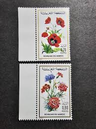 |
| eBay Australia | Persia 1993 Flower,Blumen,Corn poppy Papaver rhoeas,mohn,Coquelicot,Mi.2588, MNH | eBay Australia | 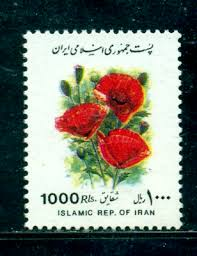 |
| OnlineStampShop | Lebanon Postage Stamps | 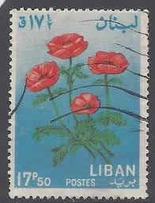 |
| Etsy | 20 Stamp LEBANON Fun Pack / Lot of 20 Different Random Used LEBANESE Stamps / Vintage Stamps / Philately / Scrapbooking / Art Project - Etsy | 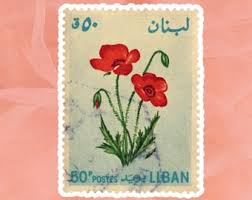 |
| eBay | Sheet Indian Stamps (1947-Now) for sale | eBay | 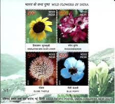 |
| HipStamp | Lebanon 424 Anemone Flower 1964 | Middle East - Lebanon, General Issue Stamp / HipStamp | 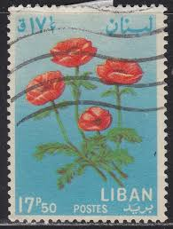 |
| HipStamp | Bulgaria 2088-90 USED BIN$ 1.00 | Europe - Bulgaria, General Issue Stamp / HipStamp | 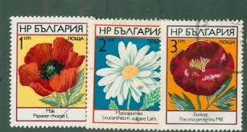 |
| getstickerpack.com | Sticker Maker - 1401 | 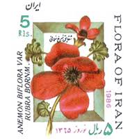 |
| Album Portal | Hungary-2002 set-Flowers - Greeting Stamps-UNC-Stamps - Albu | 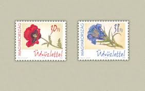 |
| PBA Galleries | Notes on Tulip Species | 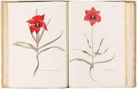 |
| Shutterstock | Lebanon Circa 1964 Stamp Printed Lebanon Stock Photo 59752450 | Shutterstock | 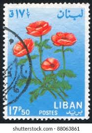 |
| martyr.shop | shop ] › martyr— | 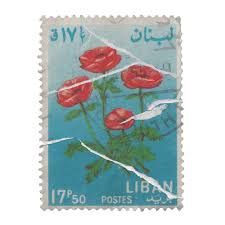 |
| Avion Thematics | Tonga 1944 Silver Jubilee Of Queen Salote's Accession Perf Set Of 5 Unmounted Mint SG 83-87, stamps on , stamps on kg6 , stamps on royalty | 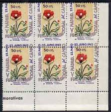 |
| eBay | Staffa, 1972, MNH, Flowers, Plants, FAUNA | eBay | 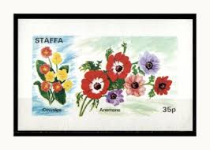 |
| Dreamstime.com | Pulsatilla Vulgaris - Pasque Flower, Flowers Serie, Circa 2012 Editorial Image - Image of historic, postage: 141359180 | 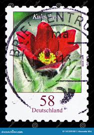 |
| eBay | LOT STAMPS MIDDLE EAST 1986 MNH** (F125994) | eBay | |
| Филателия България | Catalog of Bulgarian Postage Stamps for BC "4485" - "Spring Flowers" - four postage stamps and a special postal stamp. | |
| Open Library | kew royal botanic gardens | Open Library | |
| eBay | HUNGARY - 2002. Greetings / Flower Red Poppy / Type of 1999 MNH!! Mi 4734-4735. | eBay | |
| Amazon.in | Buy Postcard Book (Taschen postcard books) Book Online at Low Prices in India | Postcard Book (Taschen postcard books) Reviews & Ratings - Amazon.in | |
| eBay UK | Flowers Used Albanian Stamps for sale | eBay UK | |
| stampphenom.com | Albania 1975 Albanian Flowers – StampPhenom | |
| Walmart | Pseudoeden: a Contemporary Utopia, (Paperback) - Walmart.com | |
| Todocolección | irán 1944 arquitectura. usado. - Compra venta en todocoleccion | |
| Dreamstime.com | Adonis Aestivalis Stock Photos - Free & Royalty-Free Stock Photos from Dreamstime |